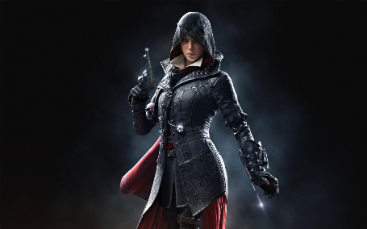
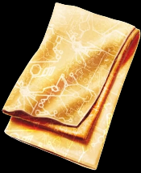

Evie Frye

Evie Frye (născută în 1847) a fost un maestru asasin al Frăției britanice de asasini, activă la Londra în epoca victoriană și soră a lui Jacob Frye. Provenind din Crawley, Evie și fratele ei au călătorit la Londra pentru a o elibera de sub controlul Templierilor și pentru a ajuta masele afectate de sărăcie, în urma morții tatălui lor (din cauze naturale). Pentru a realiza acest lucru, ea și Jacob au fondat Rooks, un sindicat criminal care s-a opus Blighters susținut de Templieri. În timp ce Jacob s-a concentrat pe eliminarea țintelor instrumentale pentru operațiunile Marelui Maestru Crawford Starrick, Evie a urmărit Giulgiul Edenului, un artefact al primei civilizații ascuns în oraș. Procedând astfel, ea a intrat în conflict în mod regulat cu Lucy Thorne, comandantul lui Starrick și expert în Piesele Edenului.
În adolescență, Evie și-a folosit abilitățile pentru a spiona conversațiile lui Ethan și prietenul tatălui său, George Westhouse, despre Frăție și a-i transmite aceste informații fratelui ei. La începutul carierei sale de asasin, Evie și-a asasinat prima țintă, un proprietar abuziv de moară care a refuzat să ofere salarii adecvate lucrătorilor săi. Proprietarul fabricii a fost în cele din urmă înlocuit de un asasin. După moartea tatălui lor în 1868, gemenii s-au alăturat lui George Westhouse în Croydon, pentru a elimina două mari amenințări: Rupert Ferris și David Brewster. Având cercetările și planurile de atac asupra unui tren care apartinea firmei domnului Starrick, Evie a desfășurat o diversiune prin detașarea vagoanelor trenului pentru a se infiltra în laborator și pentru a recupera o bucată de Eden de la el și cavalerul templier Lucy Thorne.
După ce a obținut accesul la laborator, Evie l-a asasinat pe Brewster, care experimenta artefactul pe o mașină și l-a destabilizat, provocând defecțiunea și explozia mașinii. Ulterior s-a întors la Westhouse și la Jacob pentru a raporta. Gemenii au împărtășit nerăbdarea de a călători spre Londra, idee cu care Westhouse nu a fost de acord. Cu gândul de a duce mai departe moștenirea tatălui ei, Evie l-a însoțit pe Jacob în prinderea unui tren care se îndrepta spre Londra.